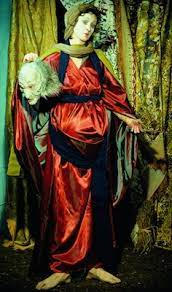

231. Untitled (#228), from the History Portraits series. Cindy Sherman. 1990 CE Photography.
- Content
- This image explores the theme of the Old Testament figure Judith decapitating Holofernes
- The richness of the consuming and the setting acts as a commentary on late-nineteenth-century versions of thai subject
- Richly decorative drapes hang behind the figure.
- Judith lacks any emotional attachment to the murder that has taken place
- Jusith uses her sexuality to attract and kill Holofernes
- Holofernes appears masklike, alert, and nearly bloodless.
- Red garments denote lust and blood
- Context
- Content
- Cindy Sherman is a New Jersey-born American artist
- The artist expresses the artifice of art by revealing the props used in the process
- The artist’s work comment son gender, identity, society, and class distinction
- The artist uses old master paintings as a starting point, but the works are not derivative
- This series sheds a modern light on the great masters, in this case Italian Baroque.